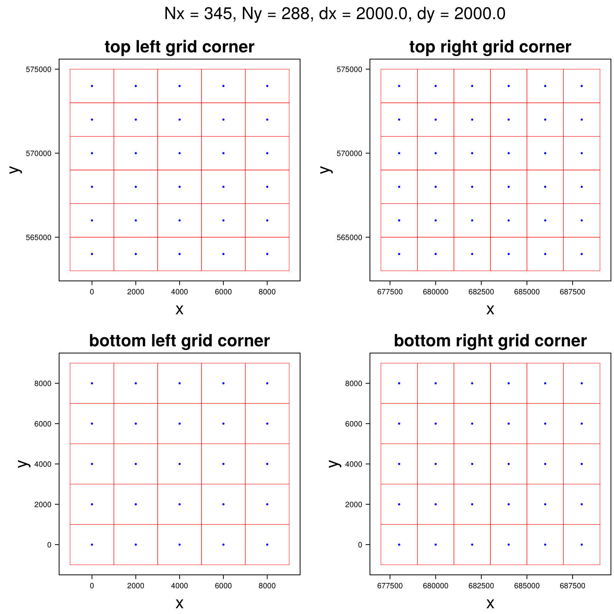
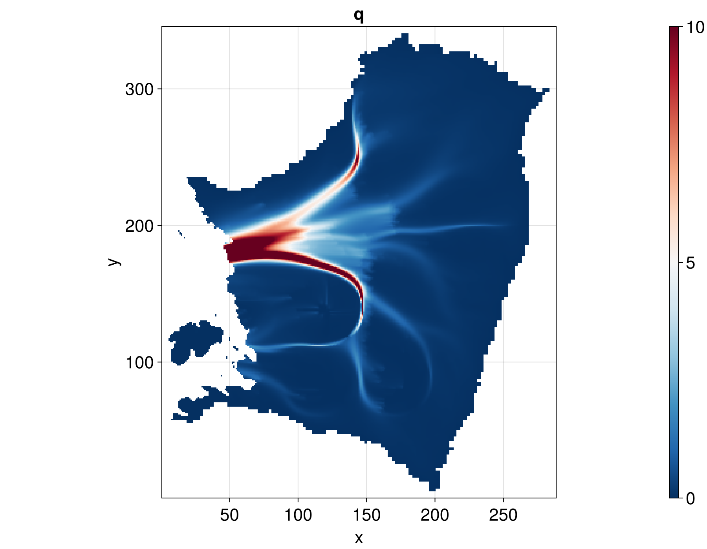
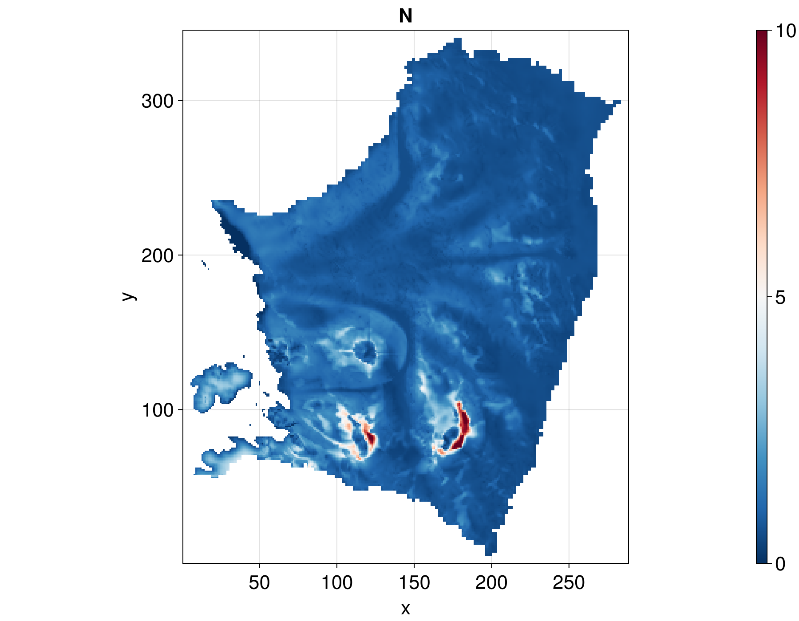
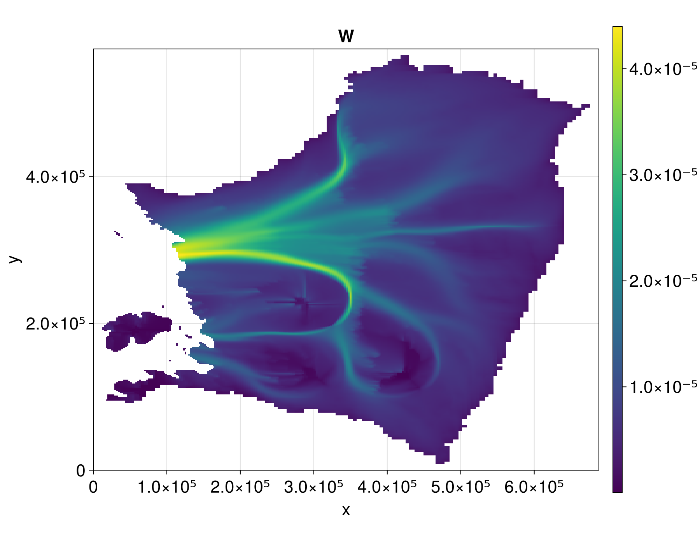

Kazmierczak et al 2024
This is an example of how to run the FastHydrology.jl package for the steady state problem of Kazmierczak et al 2024.
using FastHydrologyHow to load data from a file to get the necessary inputs to initialize the grid, model and state for the Kazmierczak et al 2024 paper.
T = Float64 # Type of the physical fields
path = "$(@__DIR__)/input/Kazmierczak2024/THWAITES2km_m3_HAB_toto.mat" # Path to data for Fig. S3 of Kazmierczak et al 2024 which focuses on Thwaites glacier.
data_loading_function = load_Kazmierczak # Function to load the data.
Nx, Ny, xlims, ylims, mask, h, b, abs_v_b, A_visc, ṁ_over_ρ_w, κ = load_Kazmierczak(path)(345, 288, (-1000.0, 689000.0), (-1000.0, 575000.0), [0.0 0.0 … -1.0 -1.0; 0.0 0.0 … -1.0 -1.0; … ; -1.0 -1.0 … -1.0 -1.0; -1.0 -1.0 … -1.0 -1.0], [0.1 0.1 … 2460.929461880111 2460.9148752165866; 0.1 0.1 … 2460.929461880111 2460.929461789928; … ; 1277.7060521811597 1277.7060521811597 … 1976.6518623811028 1976.6518623345526; 1277.7060521719504 1277.7060521719504 … 1976.6518623345526 1976.6518623345526], [-345.78372192382807 -345.78372192382807 … -620.5690771484376 -620.5690771484376; -345.78372192382807 -345.78372192382807 … -620.5690771484376 -620.5690771484376; … ; -573.4726171875003 -573.4726171875003 … 164.04352539062506 164.04352539062506; -573.4726171875003 -573.4726171875003 … 164.04352539062506 164.04352539062506], [0.0 0.0 … 18.945292839464006 663.5832967449749; 0.0 0.0 … 1.8810718789881633e-12 663.0411184231986; … ; 778.7822109268618 4.942167021284334e-12 … 3.490717850597799e-12 778.7822109268543; 784.0723992507515 4.062409505137607 … 18.945292839592135 784.2907614074378], [7.685794694721364e-17 7.685794694721364e-17 … 1.0e-20 1.0e-20; 7.685794694721364e-17 7.685794694721364e-17 … 1.0e-20 1.0e-20; … ; 1.0e-20 1.0e-20 … 1.0e-20 1.0e-20; 1.0e-20 1.0e-20 … 1.0e-20 1.0e-20], [0.0 0.0 … 3.289664982042142e-10 3.287860018896526e-10; 0.0 0.0 … 3.291496975872287e-10 3.2896868224868544e-10; … ; 3.670834487484472e-10 3.678047756042805e-10 … 3.2444999677799994e-10 3.2445361082405325e-10; 3.665018049659888e-10 3.672204050095969e-10 … 3.218825037208527e-10 3.218867703305861e-10], [0.0 0.0 … 0.0 0.0; 0.0 0.0 … 0.0 0.0; … ; 0.0 0.0 … 0.0 0.0; 0.0 0.0 … 0.0 0.0])Here we prepare a grid using the Oceananigans rectilinear grid.
grid = OGRectHydroGrid(Nx, Ny, xlims, ylims; T = T)OGRectHydroGrid(345×288×1 RectilinearGrid{Float64, Bounded, Bounded, Flat} on CPU with 1×1×0 halo
├── Bounded x ∈ [-1000.0, 689000.0] regularly spaced with Δx=2000.0
├── Bounded y ∈ [-1000.0, 575000.0] regularly spaced with Δy=2000.0
└── Flat z )There is a function to visualize the Oceananigans rectilinear grid.
fig = visualize_grid(grid)
We then build the model using the data from the input file above. The model will hold its model-specific fields, with the rest of the fields common to all models stored in the HydroState below.
model = KazmierczakHydroModel(grid, κ, abs_v_b, A_visc, ṁ_over_ρ_w);Further, we build the hydrology state using some of the data from the input file. This state will store the fields common to all hydrology models.
state = HydroState(grid, mask, h, b);Finally we can create a simulation struct. Since the Kazmierczak et al 2024 model is a steady state problem we create a SteadyStateSimulation rather than a TimeSimulation.
sim = SteadyStateSimulation(model, grid, state);We can now run the simulation which will update the hydrology state, as well as the model-dependent fields defined in the model.
run!(sim)Now we can visualize the resulting water flux q [m² s⁻¹].
fig_q = visualize_field(model.q, state.mask; plot_title = "q")
The effective pressure N [MPa].
fig_N = visualize_field(state.N, state.mask; plot_title = "N")
The water layer thickness W [m]
fig_W = visualize_field(state.W, state.mask; plot_title = "W")